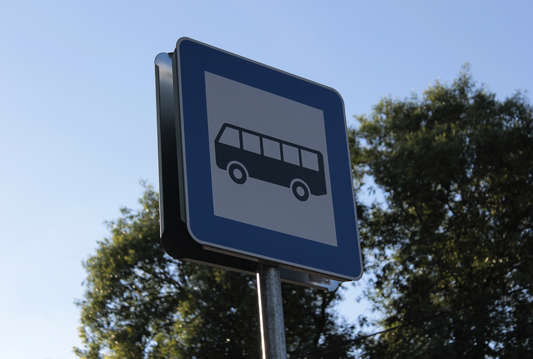
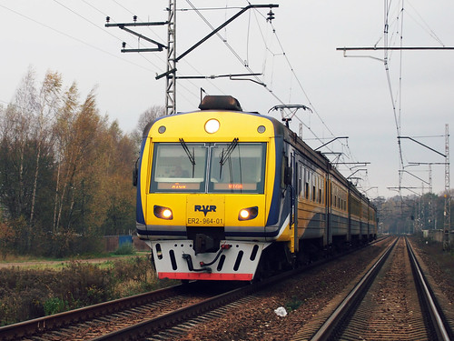
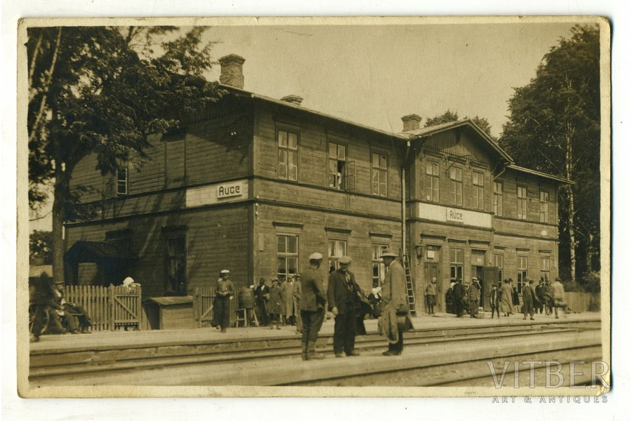
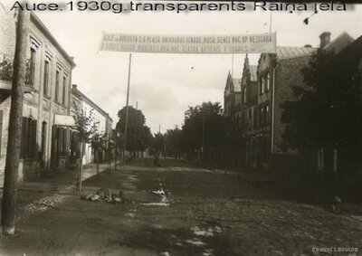
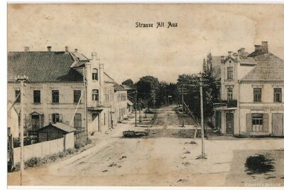

Your journey to history, culture, and beauty begins here.
Tourist Attractions
Auce Old Town: Discover the charm of cobblestone streets, traditional Latvian wooden houses, historic buildings, and quaint cafés offering local pastries and coffee. Guided walking tours are available to delve into the town's history.
Auce Manor: A 19th-century manor featuring beautifully landscaped gardens, historical exhibits, and occasional cultural events. The manor's interiors showcase period furnishings and art collections.
Nature Parks: Enjoy tranquil settings with walking trails, birdwatching, picnic areas, and scenic views. Popular parks include Auce Forest Reserve and Lielupe Riverbank trails.
How to Reach Auce
Auce is conveniently accessible through various modes of transportation, making it easy to explore this charming town from different parts of Latvia:
By Car: Enjoy a scenic 1.5-hour drive from Riga via the A9 highway, followed by regional roads. Parking is readily available in town. If you're traveling from Liepāja, the journey takes around 2 hours, while from Ventspils, it’s approximately 2.5 hours. The well-maintained roads make driving an enjoyable experience, with opportunities to admire Latvia’s picturesque countryside along the way.

By Bus: Frequent buses operate between Riga and Auce, offering a budget-friendly option for travelers. The trip from Riga takes about 2 hours, and the route provides a chance to enjoy the countryside’s natural beauty. Buses from other cities such as Liepāja, Dobele, and Jelgava are also available, making Auce easily accessible for domestic tourists.

By Train: Take a train from Riga to Jelgava, and connect to Auce via a local train or bus. Trains are comfortable, affordable, and an excellent option for travelers looking to avoid driving. From Jelgava, it’s a short 40-minute train or bus ride to Auce. If you’re coming from Daugavpils or other eastern cities, you can connect via Riga or Jelgava for a seamless journey.
By Bicycle: For the adventurous traveler, cycling to Auce is a fantastic option, especially during the warmer months. Scenic bike paths from nearby towns like Dobele make the journey a delightful experience for nature lovers and fitness enthusiasts.
Once in Auce, navigating the town is straightforward, with most attractions within walking or cycling distance. For those seeking convenience, local taxi services and rental bikes are also available to help you explore the area effortlessly.
Travel Time
Reaching Auce from nearby Latvian cities and neighboring countries is straightforward, offering a range of convenient options for travelers. Below is an overview of approximate travel times from key cities:
From Riga: About 1.5 hours by car via the A9 highway. By public transport, it takes approximately 2 hours using train and bus connections, with frequent departures throughout the day.
From Liepāja: A 2-hour drive through scenic roads makes it a pleasant journey for those coming from Latvia’s western coast. Public transport options, such as buses, take slightly longer, around 2.5 to 3 hours.
From Jelgava: A short and convenient 40-minute train or bus ride connects Auce to this nearby city, perfect for a day trip.
From Vilnius, Lithuania: A 3-hour drive makes Auce an ideal weekend destination for visitors from Lithuania’s capital. For public transport, take a bus or train to Riga, then connect to Auce via train or bus, which adds an extra 2 hours.
From Kaunas, Lithuania: A 3.5-hour drive through cross-border routes. Public transport options involve traveling to Riga first, then continuing to Auce.
From Tallinn, Estonia: A 4.5-hour drive by car via Riga, making Auce a viable stop on a Baltic road trip. Using public transport, expect a journey of approximately 6-7 hours, including connections in Riga.
From Warsaw, Poland: A 9-hour drive connects Auce with Poland’s capital. For public transport, take a bus or train to Riga (around 8 hours) and then connect to Auce, adding 2 more hours.
Whether you're driving or using public transportation, Auce is accessible from many major Baltic cities. For those arriving by air in Riga International Airport, renting a car is a popular choice, with a direct drive taking only 1.5 hours. Alternatively, airport buses connect to Riga city center, where you can board a train or bus to Auce.
Traveling from further afield? Consider taking international bus lines or trains to Riga, and then continue onward to Auce. The journey offers a chance to explore Latvia's beautiful countryside, making it as enjoyable as the destination itself.
Weather
Auce experiences a temperate climate with four distinct seasons, each offering a unique charm and opportunities to explore the region's natural beauty:
Summer (June to August): Warm and sunny, with temperatures ranging from 15°C to 25°C, making it the perfect time for outdoor activities. The long daylight hours are ideal for exploring Auce’s parks, hiking trails, and local attractions. Summer is also a great time for picnics, cycling, and enjoying open-air events or festivals that often take place in the region.
Autumn (September to November): Mild and colorful, with temperatures gradually cooling from 10°C to 20°C in September to near-freezing in late November. The surrounding forests transform into a vivid display of red, orange, and yellow hues, making it an excellent time for hiking, photography, and scenic drives. Harvest season in autumn also brings opportunities to enjoy local produce, including apples, berries, and pumpkins.
Winter (December to February): Snowy and serene, with temperatures often dropping below 0°C. Snow blankets the town and surrounding countryside, creating a picturesque winter wonderland. Visitors can enjoy activities such as sledding, ice skating, and cross-country skiing in nearby nature parks. During the festive season, the town is beautifully decorated, adding a cozy charm to the colder months.
Spring (March to May): Fresh and green, with temperatures rising from near 0°C in early March to 15°C by May. As nature awakens, the blooming flowers and budding trees make it a lovely time to explore Auce’s parks and countryside. Spring is also perfect for birdwatching, as migratory birds return to the region, and for attending local markets that showcase fresh produce and artisanal goods.
Each season in Auce offers something unique for visitors, from the sunny adventures of summer to the tranquil beauty of winter. Whether you prefer warm weather for outdoor activities or snowy landscapes for winter sports, Auce provides a range of experiences to suit every preference. Don’t forget to check the weather forecast before your trip to ensure a comfortable and enjoyable visit!
Culture
Immerse yourself in the vibrant cultural heritage of Auce, where traditions blend seamlessly with contemporary creativity. The town’s cultural scene reflects Latvia's rich history, offering unique experiences for every visitor:
Traditional Festivals: Auce comes alive during Latvia's most cherished celebrations, such as Midsummer's Eve (Jāņi). This ancient festival is marked by bonfires, singing, and traditional folk dancing under the open sky. Participants wear floral wreaths and enjoy festive foods, including cheese and beer. Visitors are welcome to join the festivities, making it a memorable cultural experience.
Local Folk Music: Experience the soulful melodies of Latvian folk music during performances in Auce. Traditional instruments like the kokle (a Latvian string instrument) take center stage, accompanied by songs passed down through generations. These performances often occur during festivals, community events, or in cultural centers, offering a glimpse into Latvia’s musical traditions.
Artisan Markets: Explore bustling markets that showcase the craftsmanship of local artisans. From intricately woven textiles and hand-knitted woolen goods to ceramics and woodwork, these markets are a treasure trove of Latvian culture. They also provide an opportunity to purchase unique souvenirs while supporting local artists.
Historical Exhibits: Discover Auce’s history through museums and cultural centers that feature exhibits on Latvian traditions, local legends, and historical artifacts. Learn about the region's past, including its agricultural roots and architectural heritage, such as the iconic Auce Manor.
Culinary Traditions: Savor the flavors of Auce by indulging in traditional Latvian cuisine. Local cafés and bakeries often serve favorites like rye bread, smoked fish, and seasonal berry desserts. Don't miss the chance to try sklandrausis, a sweet carrot and rye tart, and sample locally brewed drinks.
Seasonal Events: Throughout the year, Auce hosts various cultural events, including open-air concerts, art workshops, and theatrical performances. The town’s calendar is filled with opportunities to connect with the local community and participate in its vibrant cultural life.
Traditional Crafts Workshops: For a hands-on cultural experience, join a workshop where you can learn traditional Latvian crafts, such as weaving, pottery, or jewelry making. These workshops offer a deeper appreciation of Latvian artistry and make for a memorable activity during your visit.
Whether you’re attending a lively festival, listening to traditional music, or exploring local art, Auce invites you to embrace its rich cultural tapestry. Every experience offers a deeper connection to the town's traditions and the warmth of its community.
History of Auce



Auce’s history is a fascinating journey through time, rooted in the rich cultural and historical landscape of Latvia. From its medieval origins to its present-day charm, the town has evolved through various periods of occupation, independence, and cultural exchange, shaping the resilient community we see today:
Medieval Origins: The origins of Auce date back to the medieval period, where it served as an important trade and agricultural hub in the Duchy of Courland and Semigallia. Situated along key trade routes, it was a thriving center of commerce, where local goods such as grain, livestock, and timber were exchanged with merchants from neighboring regions. The town’s strategic location made it a focal point for both local and international trade.
Cultural Exchanges and Historical Occupations: Throughout the centuries, Auce found itself at the crossroads of various cultural and political influences. From the Germanic crusaders in the 13th century to Swedish, Russian, and Polish occupations, the town experienced a rich history of cultural exchanges. Each period left an indelible mark on the town’s architecture, language, and traditions. These diverse influences helped shape the local community, blending Latvian, German, and Russian elements into the town’s unique identity.
The Rise of Auce Manor: One of the most significant historical landmarks in the town is Auce Manor, built in the 19th century. This manor house, with its elegant architecture and lush surrounding gardens, was once home to noble families and played a central role in the region’s agricultural and cultural development. Today, the manor stands as a testament to the town’s aristocratic past, offering visitors a glimpse into the opulent lifestyles of the past while hosting cultural events and exhibitions.
Independence and Resilience: During the early 20th century, Auce became an important symbol of Latvian resilience. Following the declaration of independence in 1918, the town witnessed the growth of a strong national identity. Despite the challenges brought by subsequent occupations during both World Wars and the Soviet era, the people of Auce continued to preserve their cultural heritage and traditions, creating a proud legacy that endures to this day.
Preservation of Landmarks and Archives: Auce is home to several historical landmarks, including the old town with its cobblestone streets, traditional wooden houses, and the well-preserved Auce Manor. The town also boasts a wealth of historical archives, museums, and local heritage sites that tell the story of its people and their struggles for independence. These sites offer an enriching experience for history enthusiasts, who can delve deeper into the region’s past and understand the profound cultural legacy that shapes the town today.
Modern-Day Heritage and Identity: Today, Auce is a town that honors its historical roots while embracing its future. The community actively works to preserve its history through cultural events, historical tours, and educational programs. Local traditions are celebrated through festivals and activities that keep the town’s history alive, inviting visitors and residents alike to connect with the past while moving towards a promising future.
Auce’s history is a testament to the resilience and spirit of its people. From its medieval roots as a trade center to its modern-day charm as a preserved cultural destination, Auce remains a proud and vibrant town where history and tradition continue to thrive.
Food & Music
Experience the unique flavors and vibrant sounds of Auce, where local traditions and contemporary culture blend harmoniously:
Food:
Auce's culinary traditions reflect the town’s deep connection to the land and its agricultural roots. The local cuisine is simple yet hearty, with an emphasis on fresh, seasonal ingredients. Key dishes include:
Rye Bread (Rupjmaize): A staple in Latvian cuisine, this dark, dense bread is made from rye flour and often served with butter, cheese, or smoked meats. It has a unique, slightly sour flavor and is loved by locals.
Smoked Meats: A tradition that dates back centuries, smoked meats like sausages and ham are a favorite in Auce. The smoky flavor, combined with various herbs and spices, makes them an essential part of local feasts and gatherings.
Hearty Soups: Rich, filling soups made from vegetables, potatoes, and meats are common, especially during the colder months. Popular varieties include pea soup, cabbage soup, and potato soup.
Fresh Dairy Products: The region’s dairy products are renowned for their quality. Creamy cheeses, curd, and sour cream feature prominently in dishes and are often served as accompaniments to meals.
Local Berries and Preserves: Auce’s rich natural environment provides an abundance of wild berries, such as lingonberries, blueberries, and cranberries, which are used to make delicious jams and preserves.
The food in Auce is a reflection of the town's connection to its agricultural heritage, with many dishes passed down through generations. Visitors can enjoy these local delights at family-owned eateries, cozy cafés, or during festive community events.
Music:
Music is an integral part of Auce's cultural identity, with both traditional and modern influences shaping the town’s vibrant music scene. From folk festivals to contemporary performances, music brings the community together:
Traditional Folk Music: The roots of Latvian music are deeply embedded in the folk traditions of Auce. Melodies played on traditional instruments like the kokle (a type of zither), the accordion, and the violin are commonly heard at festivals and local gatherings. These tunes often tell stories of nature, love, and rural life.
Folk Dancing: Folk dancing is another key aspect of the music culture in Auce. Dances like the polka and the mazurka are commonly performed during cultural events, with locals donning traditional costumes. The rhythms are lively and the dances are filled with joy and camaraderie.
Modern Performances: While traditional music holds a special place in Auce, the town also embraces contemporary music genres. Local musicians and bands often perform a mix of pop, rock, and jazz at public events, bringing modern flair to the town’s music scene.
Music Festivals: Throughout the year, Auce hosts various music festivals and cultural celebrations. These include folk music festivals, where local musicians showcase their talents, and modern music events that attract performers from across Latvia and beyond.
Singing Traditions: Singing is at the heart of many Latvian cultural events, and Auce is no exception. Traditional choral singing, particularly the “dainas” (folk songs), are a key part of local festivals. These songs are passed down through generations and often reflect the spiritual and daily lives of the people.
In Auce, music is a celebration of life, community, and heritage. Whether you're tapping your feet to a folk tune or enjoying a contemporary concert under the stars, the music of Auce will leave a lasting impression.
From savoring the rich flavors of locally-sourced dishes to enjoying the lively rhythms of traditional and modern music, the experience of Auce is a true feast for the senses. Whether you're a foodie, music lover, or both, there’s something in Auce that will captivate your heart and soul.
Geography
Auce is located in the scenic Zemgale region, known for its natural beauty and agricultural richness:
Rolling hills and fertile plains ideal for farming.
Proximity to the Lielupe River, offering picturesque views and recreational opportunities.
Nature reserves with well-maintained trails for hiking, cycling, and birdwatching.
Accommodations
Auce offers a variety of lodging options to suit different preferences:
Hotels: Modern and comfortable accommodations with amenities like Wi-Fi and dining services.
Guesthouses: Cozy and personalized stays that reflect local charm.
Rural Homesteads: Stay close to nature in traditional Latvian farmhouses.
Events Calendar
Plan your visit around exciting events in Auce:
Annual Festivals: Highlights include the Summer Solstice Festival and Auce Day celebrations.
Local Events: Regular markets, art exhibitions, and cultural performances that bring the community together.
Local Businesses
Support Auce's vibrant economy by exploring its local businesses:
Shops: Unique boutiques offering handmade crafts, souvenirs, and local products.
Dining: Restaurants and cafes that serve authentic Latvian cuisine and international dishes.
Gallery
Experience Auce through visuals:
Photos: Stunning images of historic landmarks, natural scenery, and cultural events.
Videos: Dynamic clips capturing the spirit of the town.
Virtual Tours: Interactive experiences of popular attractions and hidden gems.
Visitor Information
Essential details to help you make the most of your visit:
Tourist Office: Located in the town center, offering maps, brochures, and guidance.
Guided Tours: Available in multiple languages, showcasing key attractions and local stories.
Contact Us
We are here to assist you:
Inquiries: Fill out our contact form for any questions or requests.
Social Media: Follow us on Facebook, Instagram, and Twitter for updates and travel tips.